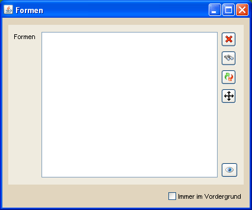

Zeichnungsübersicht |
|
|  | |
Die Zeichnungsübersicht dient dazu, erstellte Zeichnungen auf der Hauptkarte zu verwalten. Bei Bedarf kann man die Position einer jeden Zeichnung in dieser Übersicht punktgenau festlegen. Die Spalte "Sichtbar" zeigt zudem an, ob die jeweilige Zeichnung im momenten sichtbaren Ausschnitt der Hauptkarte auftaucht. Das Menü auf der rechten Seite bietet die folgenden Funktionen:
|
|
Shortcut-Funktionen |
|
|